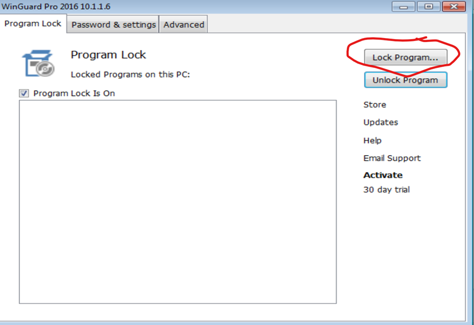
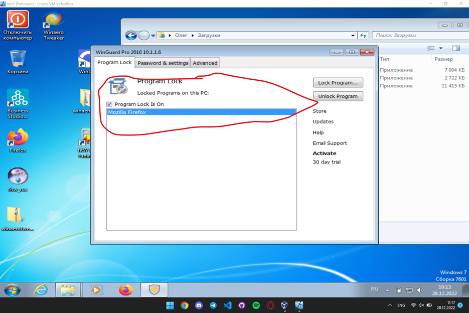
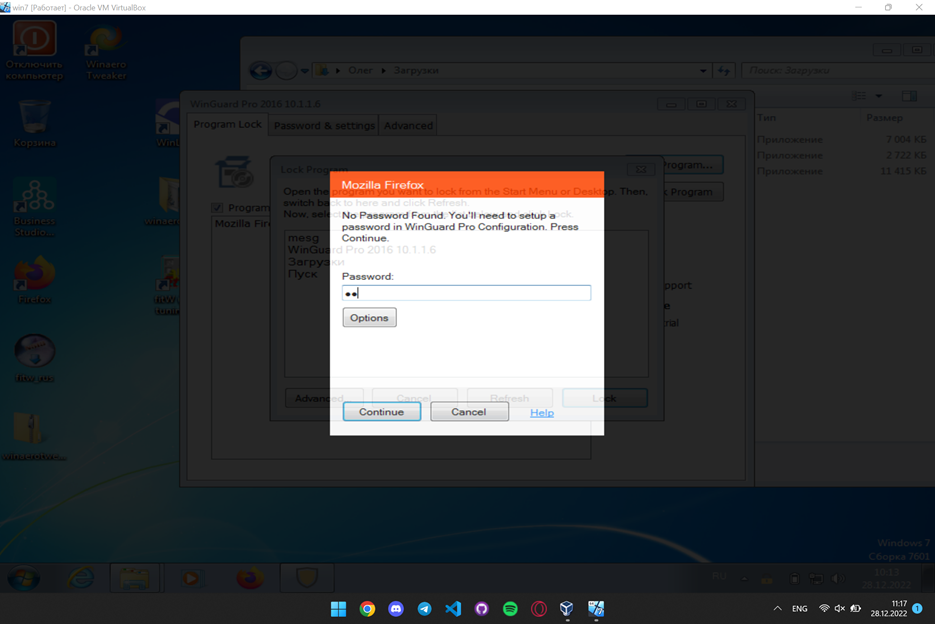
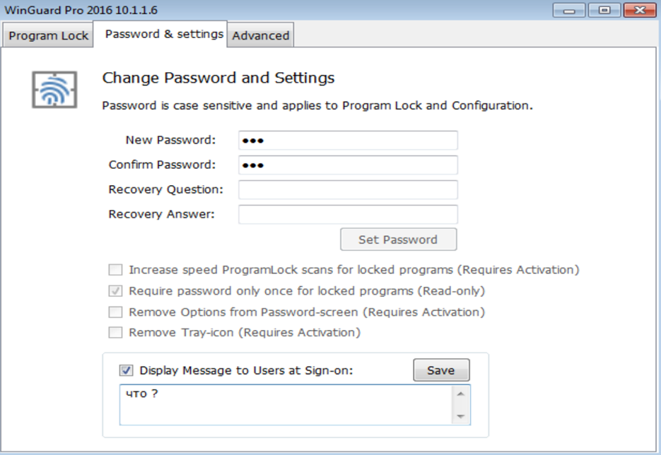
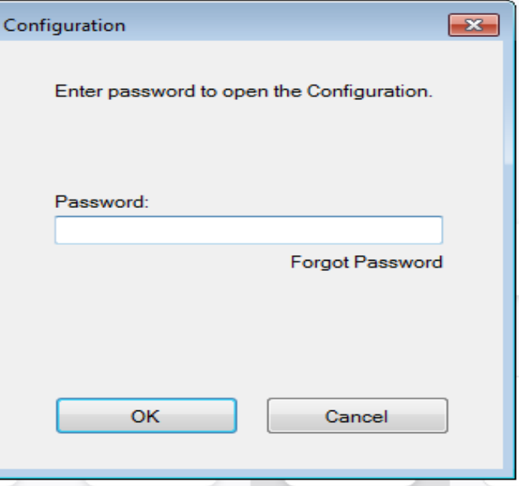
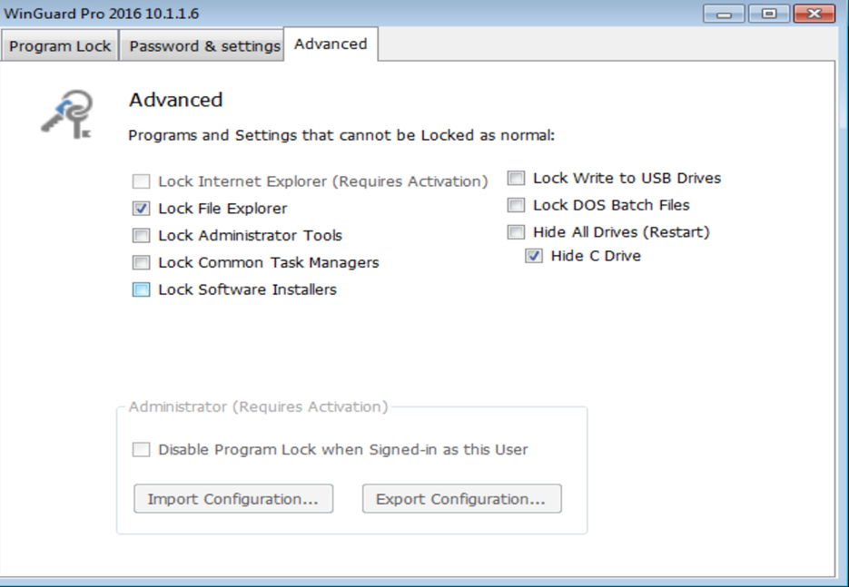
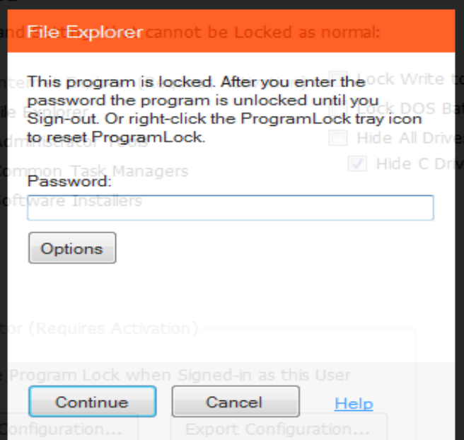
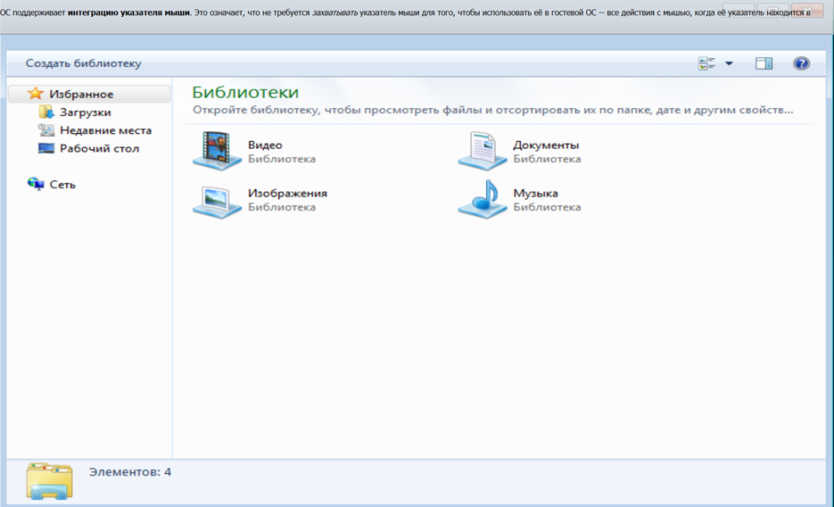

Данная программа распостраняется бесплатно. Её основными особенностями являются – блокировка программ, установка баролей на опредёлённые объекты.
Программа состояит их 3-х вкладок.
1. Program Lock
В этом окне программа позволяет блокировать программы. При нажатии на кнопку Lock Program появляется список с программами, которые можно заблокировать.
Program Lock
После этого программа появляется в списке заблокированных.
Список заблокированных программ
После этого при попытке запуска программы из списка заблокированных появляется окно с просьбой ввести пароль. При не верном пароле программа завершает свою работу.
2. Password & settings
В данной вкладке позволяется настроить пароль, который использует данная программа
При попытке входа в неё повторно, после введения пароля программа просит его внести.
Password
3. Advanced
В данной вкладке программа предоставляет дополнительные возможности, такие как - Блокировка File Explorer - Скрыт диск C - Заблокировать функции Администратора на устройстве - Заблокировать установку программ - Заблокировать USB порты
Advanced
После настроек, которые были показаны на рисунке выше, при попытке входа в Файловый Менеджер система запрашивает пароль
File Explorer
После ввода пароля в файловом менеджере пропал Диск C
Диск С
Вывод
На этом функционал данной программы заканчивается. Данная программа, достаточно простая и не большая по функционалу, чем рассмотренный выше WinLock но , в ней сильно проще разобраться. И все необходимые для базового ограничения функции в ней есть.